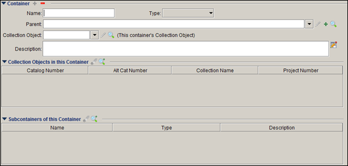
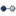
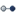
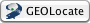
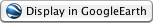

Data forms are used for entering, editing and viewing collection data. Because Specify uses related fields to link information, most data can be entered using the Collection Object form, however it may be useful to enter background information, such as Agents and Collecting Events before entering Collection Objects.
Access data forms by clicking the (Data ) button. A list of forms will appear in the side bar.
Each discipline has access to a specific set of forms for viewing, entering and editing
data. Specify ships with the most frequently used forms listed on the side bar. Less common
forms are found by clicking  (More Forms) in the side bar and choosing a
form from the pop-up dialog.
(More Forms) in the side bar and choosing a
form from the pop-up dialog.
A Side Bar Data Form Configuration tool gives access to less frequently used forms and also allows the side bar and More Forms lists to be interchanged and rearranged:
Right-click an open section of the side bar to activate the button or choose Tabs > Configure Side Bar from the top menu bar.
- Use the
,and
(reorder) buttons to change the order in which the forms appear in the side bar and More Forms list.
- Use the
, and
(move) buttons to move a side bar item to the Extra Forms list and vise versa.
- Click the
(add) button for a list of additional forms that can be moved into either the side bar or More Forms list.
- Click the
(delete) button to remove forms from either the side bar or More Forms list; this will put them back into the master list.
Deleting a form from the More Forms list also removes the represented table from any searches.
Deleting a form from either the side bar or Extra Forms will place it back in the master list which is accessed by the
Working with Forms and Trees
Specify represents Taxon, Geography, Storage, Lithostratigraphy and Chronostratigraphy data in both trees and forms. When entering data using a form, keep in mind that Carry Forward is not available for the Parent field and entering Child Nodes via the tree can save time and energy.
When adding, editing or viewing data as a tree, users can also access forms for individual nodes by clicking either the edit () button or the add (
Note: Tables can not be edited simultaneously in both the Tree and Form mode, or by multiple users. For example, if a user is editing the Taxon Tree and wants to open a Taxon Form, it will open as View Only. In addition, if another user tries to open either the Taxon Tree or Taxon Form, a dialog will pop-up stating that the Tree is locked and will open in View Only mode.
Containers
New in Specify 6.3! Containers allow collection objects to be permanently 'grouped' together. Containers can be substrates or physical containment objects within a collection. For example, a microscope slide upon which one or more algal specimens (collection objects) are mounted can now be assigned a catalog number and be linked to the algal collection object records. Containers can hold specimens or other containers. A lichen specimen on the bark of a wood sample, might need to be cataloged as a collection object, with the piece of wood cataloged as a Container. A Container might also be a box of specimens (Collection Objects) that needs to be cataloged as a traceable collection artifact. A container must be linked to a collection object to be cataloged in a collection. For a more indepth explanation of the container concept in Specify please read the document, Containers and Storage Concepts, found on the Documentation page of the Specify website.
Containers can be either physical or logical. The above examples are all physical containers. A logical container is one in which only associations are made. For example, a skin, jawbone and tail of an animal may exist in different storage units in a collection. Each of these is a separate collection object record in Specify but require a logical association. A named container can be created and each of the objects associated with the container.
Containers should not be confused with nodes on a storage tree. Containers can be associated with a node on a storage tree but are not the actual node. The box in the example above would not be listed in the storage tree, but may be stored on a shelf in a particular room. The shelf and room are part of the storage tree.
Note: Containers and their associated collection objects must be within the same collection
Cataloged Containers
Containers can be cataloged by first creating a collection object and then associating it with a container.
Subcontainers
A container that is contained in another container is called a subcontainer. Subcontainers may not be cataloged.
Containers are created using a container form or a collection object form. The collection object form must be edited to include the container controls before containers can be created or associated through it. For more information about editing forms please contact Specify at specify@ku.edu.

Container Form
Container Form
Container forms can be added to the side bar using the Side Bar Data Form Configuration tool.
Note: At this time a container may not be deleted if collection objects are associated with it. To delete a container you must first remove all collection objects associated with the container.
Note: A collection object that is associated with a container may not be deleted. To delete the collection object the container association must first be removed.
- Name the container.
- Type is a pick list that you may configure, this may include sheet, folder, box, etc. For more information please refer to system pick lists.
- Parent is used when the container is a subcontainer. It is the name of the parent container
- Collection Object is used to catalog the container. The collection object must already exist.
Select the (Edit) button to edit a relationship.
Click on the (Search) button and type in all or part of a catalog number. A matching list of available catalog numbers will display to choose from.
- Collection Objects in this Container lists all the collection objects associated with the current container.
Select the (Remove) button to remove a collection object from the list (it does not delete the collection object).
Click the (Search and Add) button and type in all or part of a catalog number. A matching list of catalog numbers will display to add to the list.
- Subcontainers of this Container lists all containers that are held in the current container.
Select the (Remove) button to remove a container from the list (it does not delete the subcontainer).
Click the (Search and Add) button and type in all or part of a container name. A matching list of containers will display to add to the list.
Containers on a Collection Object form
Collection Object forms can be edited to include a container control. For more information about editing forms please contact Specify at specify@ku.edu.
Container Control
- Select This Collection Object belongs to Container if the collection object is associated with this container, or in other words, the collection object is 'inside' the container.
- Select This Collection Object is the Container if the collection object is the physical container or primary collection object used to describe the container.
Buttons provide several capabilities.
Select the (Edit) button to edit a container.
Select the (Search) button and enter all or part of a container name. A matching list of container names will display to select from.
Select the
Taxon Form
The Taxon form includes fields from the Taxon table such as Name, Parent, Rank, Common Name, Source (of the Taxa), Author (this is often the person that described the particular taxa), synonym information, Child Taxa and Taxon Citations.
It also includes information for Hybrids by combining the Hybrid Parent 1 field and the Hybrid Parent 2 field.
Determinations Form
The Determinations form includes many fields that may not be immediately recognizable.
|
Field Label
|
Field Usage
|
|
Preferred Taxon
|
This is a view only field that represents the preferred name of any synonym entered into the Determined Taxon field. If a preferred name is entered into the Determined Taxon Name field then this will represent a duplication of that name. |
|
Current
|
A check box to indicate whether a given determination is current for this specimen. Current Determination is a Required Field but only one can exist for each Collection Object. Therefore; to change the Current Determination one must first open the old Determination and uncheck the Current box. |
|
Taxon
|
This field is the determined name of the specimen in question. Names can be chosen from the existing authority file from a Query Combo Box, or added to the Table. Synonymized names are included in the Query Combo Box, but if chosen a prompt will indicate that the name is a synonym and ask which name to use. This prompt can be turned on by choosing Specify > Preferences > Trees on a Macintosh or Edit > Preferences >Trees on Windows or Linux and checking the Prompt to Replace Taxon with Preferred Taxon box. This field operates as an “either/or” condition with Alternate Name; both cannot be entered in a single Determination. |
|
Qualifier
|
A term to qualify the identification of the taxon name when doubts have arisen as to its identity or as a comparison to a given name (e.g. "cf." or "aff."). |
|
Addendum
|
A Pick List suffix element added to the taxon name to indicate a concept or citation for that name. For example; sensu lato. |
|
Type Status Name
|
A pick list of all available type designations; Holotype, Paratype, Neotype. Specify ships with predetermined values which are editable for users. |
Botany and Entomology Taxon forms will also have these two fields:
| Alternate Name | A free text field for insertion of a name (scientific or common) not recognized in the taxon tree authority. This field operates as an “either/or” condition with Preferred Taxon; both cannot be entered in a single Determination. |
|
Name Usage
|
User customizable pick list used to describe the context of the name entered into the taxon or Alternate name fields. Taxon field - if a synonym name is used, it could denote a “shelved by” name. Alternate name field - could denote the appropriate authority the alternate name was taken from (e.g. Flora of Nebraska). |
The Locality form introduces unique latitude and longitude information represented by a set of buttons.
- Choose a latitude/longitude format from the Combo Box
Decimal/Degrees Degrees/Decimal/Minutes Degree/Decimal/Seconds
| Top Button | Bottom Button | Explanation |
|
|
Single Point | |
|
|
Beginning/Ending Point on a Line Note: this requires latitude and longitudes for both points |
|
|
|
 |
Beginning Point |
|
|
 |
End Point |
|
|
|
Beginning/Ending Point on a Bounding Box Note: this requires latitude and longitudes for both points |
|
|
Beginning Point | |
|
|
End Point |
When a lat/long is entered the format is captured and displayed in the (Source) field. This field remains constant when formats are changed, but if the lat/long numbers are changed then the (Source) field will update to the new lat/long entry.
Note: Specify does not track versions of the latitude and longitude and does not keep a verbatim field.
Other data on the Locality form include a Geo Referencing Determination By and Date. These are for documenting how and when a georeference for the Locality occurred.
A (Preferences) button is available on the latitude and longitude panel. Click this button to set the following defaults:
GEOLocate
The GEOLocate project has created software and services for translating textual locality descriptions associated with biodiversity collections data into geographic coordinates. It uses a description of a Locality and geography fields, such as County, State and Country, to find Latitude and Longitude coordinate values. This is referred to as georeferencing.
The Specify and GEOLocate teams have collaborated to create a GEOLocate module inside Specify. In Specify 6.4 and newer GEOLocate has been upgraded to plugin version 2.0.
Requirements for Georeferencing US localities:
Locality Name Country State County No, but will improve results.
Note: County is required when including waterbody and highway crossing in the GEOLocate search.
Latitude1 No
(this is a results column)Longitude1
(this is a results column)
Requirements for Georeferencing localities outside of the US:
Locality Name Country Child Node of Country No, but will improve results. Latitude1 No
(this is a results column)Longitude1
(this is a results column)Note: A complete list of acceptable countries is available on the GEOLocate website.
Once the locality information is complete, the GEOLocate button will become enabled.
Click the  button to send locality information to the GEOLocate service. A message will either display the number of records GEOLocate found results for, or state that no results were found.
View GEOLocate Results
Results will display in the GEOLocate Results Chooser tool.
GEOLocate
Locality Information displays the Locality Description, County, State and Country values in your current record.
Correction (Green) Marker Properties include the values for the most accurate result among the GEOLocate results returned. These values are also displayed visually on a map.
GEOLocate results can be edited using either the Correction Marker Properties form or the map elements. Changes made on the map are automatically recalculated and updated in the corresponding fields on the form. Updated values in the Correction Marker Properties form are automatically represented in the corresponding map element.
Note: As you move your mouse within the map the corresponding latituted and longitude values display in the lower right corner under the map.
Position represents the Latitude and Longitude of the GEOLocate result, visually depicted on the map as a green marker. These results can be edited.
Edit the Position using the Marker Properties form:
- Type new values in the Latitude and/or Longitude box.
- Click the Apply button to accept the changes and update the location of the green marker on the map.
Edit the Position using the map:
- Click on the green dot on the map and drag it to a new position. The latitude and/or longitude values on the form will automatically update.
Uncertainty Radius represents the error due to the uncertainty of the locality information provided. It is shown as a grey circle around the green point marker on the map. The Uncertainty Radius can also be edited.
Note: At this time in Specify the Uncertainty Radius values are not written in a Specify database field.
Edit the Uncertainty Radius using the Marker Properties form:
- Click the Uncertainty Radius button. The text box will change to accept numeric values, and a large arrow will appear on the map next to the Uncertaintly Radius point.
- Type a new numeric value into the box and click the Apply button to accept the changed value in the GEOLocate tool and update the Uncertainty Radius on the map.
Note: If GEOLocate does not find an Uncertainty Radius the text box will open ready to accept numerical values and the Apply button will be available.
Edit the Uncertaintly Radius using the map:
- Click the Uncertainty Radius button. The box will change to accept numeric values, and a large arrow will appear on the map next to the Uncertaintly Radius point.
- Click in the center of the arrow and drag to reset the Uncertainty Radius on the map as well as the numeric value in the form. As you move your mouse within the map the corresponding Uncertainty Radius, and latituted and longitude values display in the lower right corner under the map.
Note: If GEOLocate does not find an Uncertainty Radius the text box will open ready to accept numerical values and the Apply button will be available. You must type a value into the text box and click the Apply button before the arrow will appear on the map.
Error Polygon is a polygon which encompasses the entire area of uncertainty.
Results which include an Error Polygon will display the vertex values in the form and a red polygon on the map. Not all results include an Error Polygon. If the results do include an Error Polygon the vertex values in the form must be cleared by clicking the Clear Polygon button before the Error Polygon can be edited.
Note: At this time in Specify the Error Polygon values are not written in a Specify database field.
Edit the Error Polygon using the Marker Properties form:
- Click the Draw Polygon button. The box will change to accept numeric values. Type in latitude and longitude values, separated by commas.
- Click the Apply button to accept the values in the GEOLocate tool and draw the polygon on the map.
Edit the Error Polygon using the map:
- Click the Draw Polygon button. A blue circle will appear around your mouse in the map area.
- Left-click on the map to add a vertex point.
- Continue adding points until the polygon is complete.
- Double click on the last vertex point to finish the polygon and exit the draw polygon mode. The vertex values will be updated in the form.
OR, Right-click on the map to cancel the vertex and exit the draw polygon mode.
Note: If there are vertex values included in the Error Polygon field the values must be cleared by clicking the Clear Polygon button before new values can be entered or drawn on the map.
GEOLocate Results displays the GEOLocate results in grid form. If multiple results are returned they are numbered and sorted with the most accurate listed first. The active result is highlighted in blue on the form. Other GEOLocate results are represented by red markers on the map.
Click on either a record in the GEOLocate Results form or a red point on the map to make it the current, or active result. The fields in the Correction Marker Properties box will be filled in and the green marker will represent the current result until you manually make corrections.
- Number represents the order of GEOLocate returns both in the form and in a corresponding point on the map.
- Latitude represents the latitude to the hundredth degree.
- Longitude represents the longitude to the hundredth degree.
- Pattern, or pattern identifier, is a text description of the pattern or keyword used to determine a GEOLocate result. Single locality strings often include multiple patterns, producing multiple GEOLocate results.
- Precision is an indication of the quality of locality information. Each GEOLocate result is given a score between 0 and 100 which represents the probability of it being a match. That score is then placed within a 'low', 'medium' and 'high' ranking to indicate precision. Results are then ordered according to their probability number, which allows results within the same rank to include the most accurate matches first.
- Error Polygon is a polygon which encompasses the entire area of uncertainty.
- Uncertainty represents the error due to the uncertainty of the locality information provided.
Other Map Controls
Zoom In/Out
Slide the slider down to zoom in, up to zoom out.
Click the
button to zoom in, the
button to zoom out.
Turn the wheel on your mouse up to zoom in, down to zoom down.
Double click to zoom in, right-click to zoom out.
GEOLocate Web Button
Click the
button to open the web-based version of GEOLocate in your default browser and plot the current result set on the map.
Accept Results
Click the Accept button at the bottom of the GEOLocate tool to write the values of the GEOLocate result in the appropriate fields in Specify.
If a batch of records was processed in GEOLocate the next record will display in the GEOLocate Results Chooser.
Skip Record
Single records are displayed in the GEOLocate Results Chooser. Use the Skip button to skip the current record.
More information about GEOLocate can be found at http://www.museum.tulane.edu/geolocate/.
WorldWind
The link to NASA World Wind is always available on the Locality form. A text box at the top of the World Wind dialog allows either a Latitude and Longitude or a Locality Name to be entered. The location is then displayed on a World Wind map. If either a Latitude and Longitude or Locality Name exists in the Locality form World Wind will automatically plot the location on the map once the button is clicked.
World Wind requires a 3D video card with updated drivers to work properly.
Several default controls are available from within World Wind.
Mouse with scroll wheel:
Pan Left-click & drag - all directions
Left-click once to center the view.Zoom Use the scroll wheel on the mouse
or Left or Right-click & dragTilt Right - click & drag - up and down
or use "Page Up" and "Page Down" on the keyboard.Rotate Right-click & drag - left and right
Note: Crossing the top and bottom half f the screen while rotating will change direction.Stop Spacebar Reset Heading N Rest All R
Single button mouse:
Pan Left - click & drag - all directions
Left - button click once to center view.Zoom Hold "Ctrl" on the keyboard and
Left - click & drag - up and down.Tilt Hold "Shift" on the keyboard and
Left - click & drag - up and downRotate Hold "Shift" on the keyboar and
Left - click & drag - left and right.Stop Spacebar Reset Heading N Rest All R More information about World Wind can be found at http://worldwind.arc.nasa.gov/java/.
 A web link button to Google Earth is also included on the Locality form. Localities with Latitude and Longitude data can be plotted on Google Earth by simply clicking this button. Google Earth must be properly installed on the local machine for Specify to display in Google Earth.
For more information or to download and install Google Earth visit http://earth.google.com/.
For more information about the GEOLocate or Google Earth plugins please refer to the Plugins documentation.
Collecting Event / Time and Place
One of the important curatorial decisions to be made early on is the use of “Collecting Events” in a collection. This is also named 'Time and Place' on some Data Type forms. A collecting event is described by the date and time of the collection together with collector names and a number associated either with all specimens collected at that date and time or a number associated with each individual specimen.
In the first case (traditionally used in lot based collections) the number is associated with the Collecting Event itself (and all its associated data) in the form of a Station or Field Number and is therefore associated with one or many specimens or collection objects collected at the same time and place by the same collectors e.g. ACB 09-01. The Station or Field number thus describes all specimens or Collection Objects collected at that time and place. There is a many-to-one relationship between specimens, or Collection Object and "Collecting Events". In this instance, the Collecting Event form is usually expressed as a Query Combo Box on the Collection Object form so that values can be searched, and the same collecting event can be used (based on the Station/Field Number) for entering information for multiple specimens without having to enter it repeatedly. The data displayed within the Query Combo Box is then formatted using the Schema Localizer to display a textual string representing the different data elements of the Collecting Event (Field Number, Date, Geography and Locality information). The lookup function of the Query Combo Box will also display this format to aid in selecting the correct Collecting Event for subsequent specimens.
In the alternate case (used by all other disciplines) the number is associated with each individual specimen or Collection Object in the form of a Collector number - a unique number given to every specimen collected and usually including the Collectors acronym e.g. ACB 12345, while the remaining data is still bound to the Collecting Event table. There is a one-to-one relationship between specimens and Collecting Events. In this instance the Collector number would be a field on the Collection Object form and all other fields would be associated with the Collecting Event which would not include a Station/Field Number and would be expressed as an embedded sub form on the Collection Object form and would not be able to be reused for subsequent specimens.
Disciplines traditionally use one of these two methods.
A method should be chosen before data is entered, uploaded, or migrated into your database by our staff. To facilitate our set up of forms for evaluation, we have set defaults for collection types and Specify ships with all Disciplines except Ichthyology using Collection Event as a one-to-one relationship. If the default form does not represent the way you process collections, and you are unable to change the setting after following the instructions, you should contact us for setup instructions, rather than altering your workflow or introducing a new process or number.
If forms are changed from a one-to-one relationship to a one-to-many relationship the checkbox for 'Add Collecting Even Automatically' on the Collection form (System > System Setup > Configuration) will need to be unchecked after importing the new form.
An Agent is not limited to single individuals. The Agent Type field on the Agent form allows an agent to be the following:
This is an individual with field options of first, middle and last name, abbreviation, email and multiple addresses and attachments. This is often an Institution with name, abbreviation, email and multiple addresses and attachments. Using a group option allows multiple agents to be associated with one name entity. This type of Agent includes name, abbreviation, email and links to individual Agents that are a part of the group. This option is useful when it is necessary to search by the group name. Other is used when the other three options do not apply. Name and attachments are the only fields for this agent type.
It is also important to note that Agents are shared throughout a Division. In other words, if a division has two disciplines (A and B) and division A creates an Agent, division B, as well as all collections within the two divisions, will also have access to that agent.
Preparation Form
It is important to note that the Is on loan checkbox is for display purposes only. This information is updated when a loan is created or edited.
The Preparation Type field is a Pick List. To edit the Pick List choose System > Collection Setup > Configuration and click on the Pick List button in the Side Bar. For more information on editing a Pick List please refer to the System Pick Lists documentation.
Attachments Form
Many tables in Specify 6 allow Attachments. When a file is attached, Specify creates an attachment record in the database with the original name, mime-type and most importantly, the path to the file in the repository, or attachment location. The attachment location must be created by the user, and the path configured in the System Preferences. To create or alter the attachment location, go to:
- For Mac: Specify > Preferences > System > Attachment Storage Location.
- For PC and Linux: Choose Edit > Preferences > System > Attachment Storage Location.
Note: if the attached file is an image, Specify also creates and stores an icon for the image in the Attachment Storage Location.
If a path does not exist or Specify is not able to connect to the path, the Attachment button will become disabled on the forms.
Accepted Attachment files include:
- text
- audio
- binary
- image (jpg, png, gif, tiff)
- html
- spreadsheet
Note: Specify can accept images in a tiff format, but they may not display on the Windows and Linux operating systems.
Attach files to a record by clicking the Attachment button (
) on the form. An Attachment sub form will open.
- Click the
- Click the Browse button and use the file system dialog to find the path to the file.
- Type a name in the Title text box. Specify will use the file name as a default title if this box is left blank.
- Click the Accept button.
- Click the
Note: If a table does not have an attachment button, it does not accept attachments.
View/Edit Attachment
Once Attachments have been saved to a record they can be viewed/edited in form, grid, or icon mode. Each mode allows different functions.
Choose a mode by clicking the
(expand) button and selecting a mode.
Form Mode
- Use the Navigation Control to view each Attachment.
- Click the
- Click the
- Click the Browse button to change an Attachment path.
- Edit the Title of an Attachment in the Title text box.
Icon Mode
- Click the
- Click the
- Click the (edit) button to edit the Attachment path in the Form Mode.
- Double Click the Attachment button to open the Attachment in its native application.
Grid Mode
- Click the
- Click the
- Click the (edit) button to edit the Attachment path in the Form Mode.
- Click the